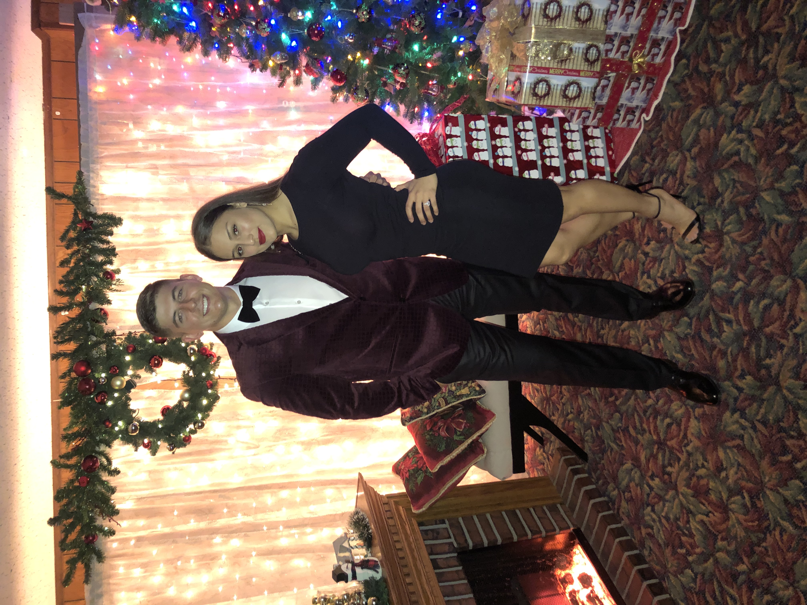

The Life Of Alex Marcial Vito

First Taste Of Life
- Born on August 20th, 1996
- Raised in Piscataway, New Jersey
- Mother who was born in Poland and a Filipino father who was born in America
- I have two brothers and two sisters
- We had a dog named Lucky and a cat named Dipstick growing up
Through Time
- I attended Piscataway High School
- I played soccer, baseball and I also was on the swim team
- I got my first job at the age of 16 working in the kitchen of an Italian Restaurant
- I completed one year of college at the University of Scranton
- I dropped out of college and enlisted in the United States Marine Corps
My first and last LOVE
- I met the love of my life on September 9th, 2012 and it has been history ever since
- We have been together for 7 years
- We have been married for 3 years
- She is a Costa Rican beauty and has the nicest glutes a man could ask for
- She is my best friend and my number one supporter
4 Year Commitment
- I shipped off to bootcamp on June 20th, 2016
- Come to find out I did not get the job I wanted and became a fueler
- I left the country once to go to Australia for 6 months
- Currently have 6 months left
Present Day: From Marine to Software Engineer/Web Developer
- Brand new to coding
- First day of class blew my mind
- Hopefully will be able to get a full tine job developing for an awesome companuy in Southern California